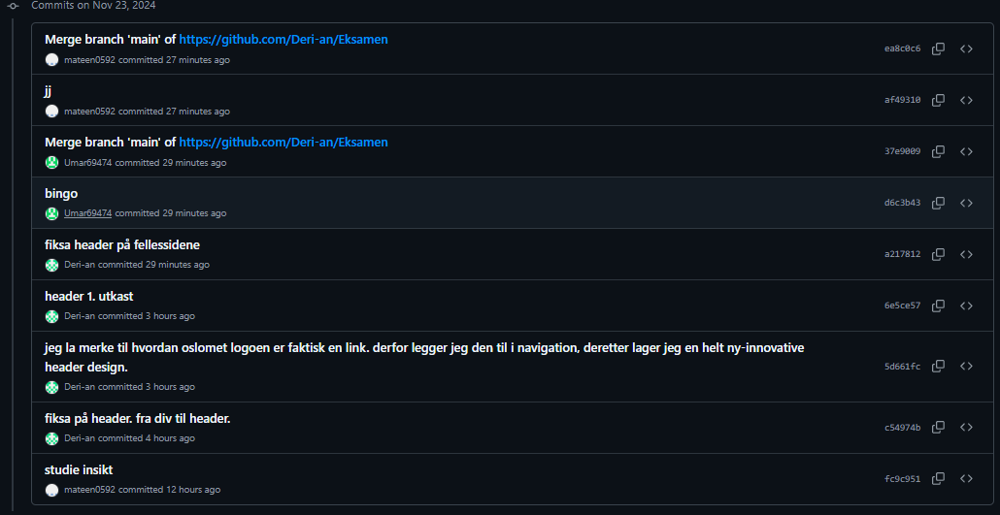
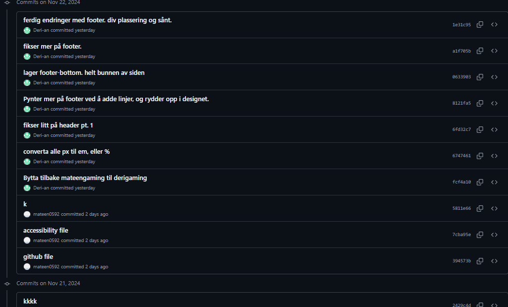
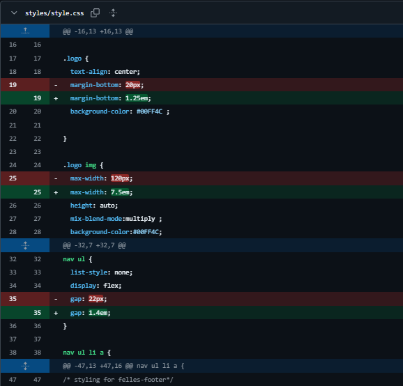
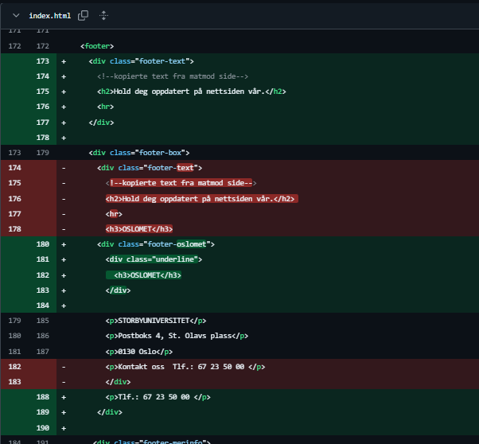

GitHub: Tool of Collaboration
In this modern world, collaboration is key. Therefore, applications that strengthen, and make collaboration easier are also key, hence Git.
Git and its' indefinite benefits
Simply put: Git is an application that can be used on VS Code to make collaborating go a lot smoother. If you ever have a team project, having Git installed can come with too many benefits to ignore, such as:
- Allowing multiple people to edit the same files without having too many conflicts occur.
- Changes become well-documented. Whenever someone changes anything with the files, Git tells you who changed it, what they precisely changed, and when they changed it. This makes collaboration a lot easier and is the main feature of Git.
- With Git comes Github, where you can store, share, download, and set up collaborations on files you wish.
- You can choose if you want to “synchronize” changes, allowing for flexibility in the collaboration that you do.
The core feature of Git
Usually, when multiple people are working simultaneously on the same files, problems would occur. Multiple versions of the same files would appear, and you would have to painstakingly figure out what to keep and what to remove. Git solves this issue by having branches, pull requests, and merging of said branches. This smoothens the process of merging 2 unique versions of the same file, which makes collaboration a lot easier.
commit history
 specific changes
 Git: Smoother collaboration
To summarize, Git and Github makes collaborating a lot easier, especially when multiple people are working on the same files at the same time. It saves a lot of time and spares us the pain of having to send back and forth file versions. Therefore, if you are planning to collaborate, get Git!